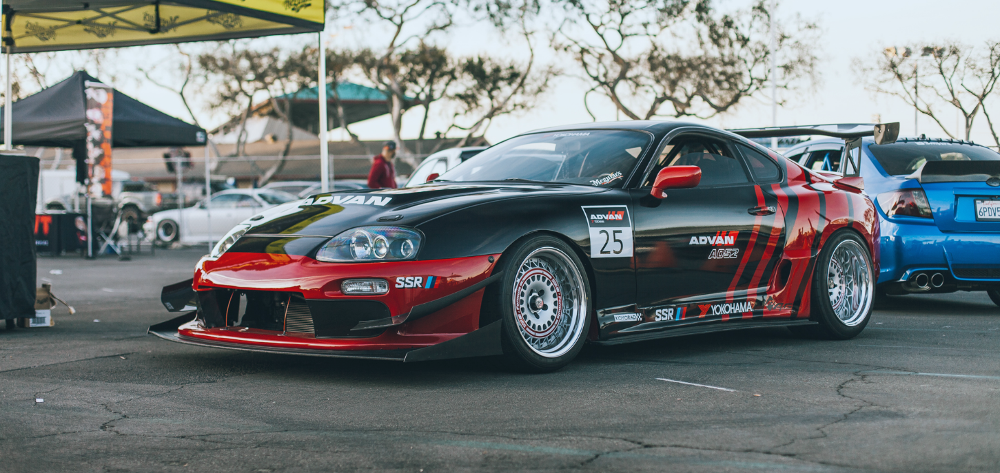

Toyota Supra
Toyota Supra (яп. トヨタ・スープラ) — серийный спортивный автомобиль, выпускающийся компанией Toyota с 1978 года. Дизайн Supra был перенят от Toyota Celica, но кузов стал длиннее и шире. Начиная с середины 1986 года, Supra отделилась от Celica, став самостоятельной моделью. В связи с этим Toyota перестала использовать префикс Celica, и автомобиль стал именоваться просто Supra. Первое, второе и третье поколения Supra собирались на заводе в Тахаре, а четвёртое и пятое поколение — на заводе в городе Тоёта в Японии. Supra также имеет связь с Toyota 2000GT, от которой к ней перешёл двигатель. На автомобили первых трёх поколений устанавливались двигатели M-серии от Toyota Crown и 2000GT. На все четыре поколения Supra устанавливались рядные 6-цилиндровые двигатели. В 1998 году Toyota прекратила продажи Supra в США, а в 2002 году было официально прекращено производство в Японии. Четыре поколения получили обозначения A40, A60, A70, A80. Официальные названия модификаций автомобилей Toyota относятся только к кодам шасси.
Первое поколение (A40)
Второе поколение (A60)
Третье поколение (A70)
Четвёртое поколение (A80)
